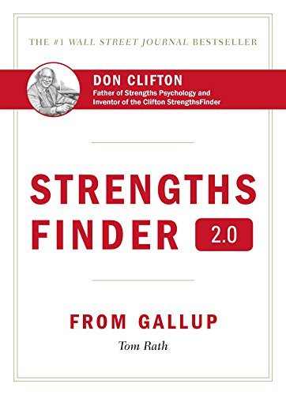

Why Coaching?
Imagine what a talented athlete would be without coaching. Good but not great, able but not exceptional. Superheroes are sometimes presented as if they just appeared able to fly, stretch, outsmart or whatever. Trust me, somewhere behind the ads for x-ray vision glasses; there was a lot of perfecting.

You have superpowers. After getting your StrengthsFinder results, you will probably recognize much of what it said; you get some clarity from it and maybe even have some questions about some of it. Engaging Crews Strengths will help you determine what you can do with your superpowers (Strengths).
Leaping tall buildings or perfecting a record breaking backstroke is done by people who have the talent and can take it to an even higher level with the help of a great coach. The same is true with your unique set of Strengths. With coaching you can identify when and how your unique talents can be more effectively applied.
You have talents you can call on to succeed. If you develop them, you will find them even more helpful and satisfying. With a coach to act as a caddy, a confidant, a sherpa, you are likely to gain more insight and confidence in how to best apply your strengths.
As a dynamic duo, you and Crews Strengths can work at aligning, clarifying and engaging your hows and whys to achieve the things that really matter to you.
Now is the best time to commit to making something good into something great. My first work with a coach led me to my personal mission statement. Your work with Crews Strengths can be just as illuminating.
Donald I. Crews
As a Gallup Certified Strengths Coach, I am thrilled to be of service to individuals, managers and teams, small and large.
My top 5 + 1 Gallup Superpowers (Strengths) are:
- Ideation
- Strategic
- Input
- Context
- Learner
- Maximizer (I've got my full 34 and that sixth one explains so much to me, I figure I needed to include it).
I am especially interested in working with:
- People who are at a transformational point like job seekers, career changers or folks who are trying to figure out what's next.
- Organizations who want staff to be happier, more effective and more engaged.
- Anyone who knows they will be successful and effective when they are more aligned with their hows and whys.
I spent a bunch of years working in libraries and one of my most rewarding jobs was helping job searchers and entrepreneurs. I am a LinkedIn expert and have taught a lot of people how to use it and other job search tools more effectively.
I have a knack for helping people figure out the questions they are trying to ask and then helping find the resources that hold the answers. It's a librarian thing.
If you would like to know more, check out my LinkedIn profile.
Testimonials
Jim A. - "I strongly recommend Donald's coaching. Donald helped me identify the working dynamics of my StrengthFinder 2.0 assessment results. In only a few weeks, I had several job interviews and at least one offer. I credit Donald's great work for this turnaround and would recommend his coaching to any individual or organization seeking to get maximum yield from the Strengths assessment."
Denise T. - "In working with Donald, I've learned (and continue to learn) how to "name, claim, and aim" my strengths. If you've been spinning your wheels trying to figure-out what you want to be when you grow up, you'll want to reach-out to Donald ASAP!"
What is StrengthsFinder®?
"Know thyself" has been recommended since ancient times. The StrengthsFinder assessment is a great way to do this. The assessment is an amazing tool which helps reveal your "superpowers" or your talents in the raw.
The assessment is taken online. It consists of 177 questions . . . actually 177 pairs of statements requiring selecting which one resonates and how much so. Researching traits of thousands of successful, happy and engaged people led to creation of the assessment.
The results of the assessment provide a unique description of you. Your top five Strengths are given with descriptions of what they mean for you. These are the talents you call on every day and which are likely to direct you to opportunities where you can thrive. How unique are you - 1 in 33 million. Those are the odds of you and any other person having the same top five Strengths in the same order.
A strange but common notion about how to succeed is to accept that we are already good enough at what we are good at and should be working on what we aren't. This doesn't really make sense. In athletics, no one tries to get a quarterback to improve his tackling or suggests an Olympic figure skater should get more time on the bobsled track. They succeed by taking their talents and exerting effort, time, and cognition to being better and better at their talents. Superheroes that can leap tall buildings are not likely to be more effective by learning safe driving skills.
And successful athletes engage coaches. They seek out someone who helps them be even better at the things at which they are already great. And you can and should do the same thing to succeed with your unique talents. Crews Strengths is available for exactly that purpose.